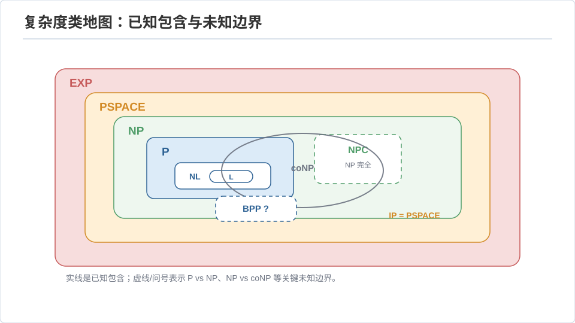
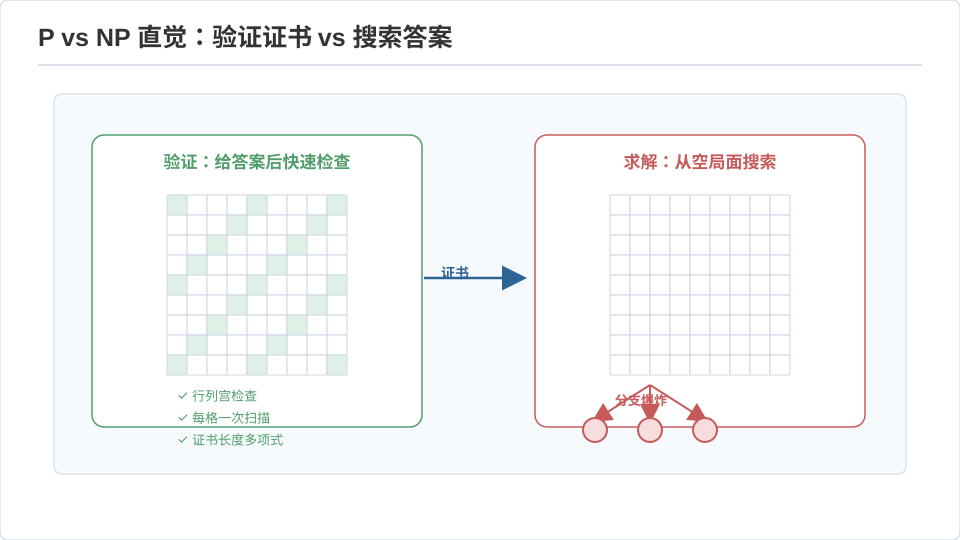

本页目录
计算理论 II · 复杂度理论
对标：Sipser 第 7–10 章 / Arora–Barak Computational Complexity ｜ 前置：toc-01、algo-03（NP 归约） 可计算性问"能不能算"，复杂度理论问"要多少资源"。这一页把 P、NP 放进更大的复杂度类地图里，讲清它们的结构关系，并触及现代复杂度的深水区（随机、空间、交互、PCP）。这是一门"用资源丈量难度"的几何学。
学习层：检查一张证书，为什么比找证书容易？
具体谜题：一个赋值够不够证明可满足？
考虑三条子句 \((x_0\lor x_1)\land(\lnot x_0\lor x_2)\land(\lnot x_1\lor\lnot x_2)\)。给定赋值 \(x_0=0,x_1=1,x_2=0\)，逐条检查很快；但没有赋值时，要试多少候选？若再加入 10 个不出现在子句中的变量，验证成本是否也乘上 \(2^{10}\)？
先预测两条增长曲线
先写下：① 验证固定证书只需扫描 3 条子句，时间随输入长度多项式增长；② 盲搜 \(n\) 个布尔变量的最坏候选数是 \(2^n\)；③ “验证快”并不推出“搜索快”，除非发生 \(P=NP\) 这样的重大坍缩。
最小心智模型：资源化的证明系统
复杂度类不是给问题贴“聪明/愚笨”标签，而是规定机器、资源和承诺。P 允许多项式时间直接决定；NP 允许一个短证书加一个多项式验证器；PSPACE 允许多项式工作空间，即使时间可能指数级。换一条资源轴，问题的归属就可能改变。
形式机制：验证器、包含与量词
\(L\in NP\) 意味着存在多项式长度证书 \(w\)，使 \(V(x,w)=1\) 可在 \(\mathrm{poly}(|x|)\) 时间完成；因此 \(P\subseteq NP\subseteq PSPACE\)。把单个存在量词换成交替的 \(\exists x\forall y\) 会让验证者必须面对对手式分支。细粒度下界则把“若编辑距离快于 \(n^2\)”归约成 SAT 更快，说明多项式内部也有结构。
反例与失效边界
- 一个具体实例验证很快，不代表能为每个实例找到证书；证书长度也必须受多项式限制。
- 复杂度包含关系不能随意画成严格包含；目前已知的严格处主要来自时间层级，\(P\ne NP\) 仍未证明。
- 平均输入很快不等于最坏输入很快；竞争比、参数化复杂度和细粒度假设分别回答不同的“快”。
迁移题：把“难”拆成机器与资源
选择一个排程、程序验证或博弈问题，分别写出：输入、证书、验证器、最坏候选数和工作空间。若加入随机性或交互，说明新增的是算法能力、验证方式还是资源预算，并指出你依赖的是定理、猜想还是经验。
无 JavaScript 时的静态版本：三条子句的赋值 \((0,1,0)\) 可逐条在 3 次检查内验证；若有 \(n=13\) 个变量，穷举最坏要检查 \(2^{13}=8192\) 个赋值。加入 10 个无关变量不会增加这张证书的子句扫描，却会把盲搜空间乘以 1024。页面脚本会在 SAT/UNSAT 两种预设间逐项计数，显示验证成本与搜索成本的差异。
1. 时间复杂度类与 P vs NP 的结构
- P：多项式时间可判定——"高效可解"的数学定义。
- NP：多项式时间可验证（存在多项式长证书，验证器多项式时间接受）。等价定义：非确定图灵机多项式时间。
- NP 完全：NP 中最难者（algo-03 已建），SAT 是第一个（Cook–Levin）。
- coNP：补问题在 NP（"否"有短证书）。
P vs NP：存在短证书且验证容易，是否意味着求解也容易？\(P\ne NP\) 仍是未解决的猜想。若 \(P=NP\)，NP 完全问题就存在多项式时间算法，标准单向函数也不能存在；但多项式的次数和常数仍可能使算法无法实用。这不把所有优化、AI 或任意长度的数学证明搜索都变成简单问题：还须检查问题是否属于 NP，以及证书的长度界。
关键结构事实：
- 若某个 NPC 问题 ∈ P，则 P=NP（NPC 是"多米诺骨牌的第一张"）。
- NP-中间：若 \(P\ne NP\)，存在既非 P 也非 NPC 的问题（Ladner 定理）——图同构、整数分解是疑似居民（分解的疑难正是 RSA 的安身之所，🔗 crypto-01）。
- NP \(\ne\) coNP 疑似成立：找不到 UNSAT 的短证书，这是"证明一个公式无解为什么难"的复杂度表述。
2. 空间复杂度：另一根资源轴
- L（对数空间）：\(O(\log n)\) 工作空间——只够存几个指针。图连通性 ∈ L（Reingold 定理，惊人结果）。
- PSPACE：多项式空间。关键：\(P\subseteq NP\subseteq PSPACE\)。PSPACE 完全问题的代表是量化布尔公式 QBF（\(\exists x\forall y\dots\)）与双人博弈（🔗 博弈论）——"你有必胜策略吗"通常 PSPACE 完全，比 NP 更难。
- Savitch 定理：对 \(s(n)\ge\log n\)，\(\mathrm{NSPACE}(s(n))\subseteq\mathrm{DSPACE}(s(n)^2)\)。取多项式空间得到 \(NPSPACE=PSPACE\)；取对数空间得到 \(NL\subseteq\mathrm{DSPACE}(\log^2 n)\)。空间代价可控，不代表模拟所需的时间也小。
时间–空间的层级总览：
其中已知 \(P\subsetneq EXP\)（时间层级定理——更多时间严格能做更多事，用对角线证），所以这条链里至少有一处严格，但我们不知道是哪处——"链上每个 \(\subseteq\) 是否 \(\subsetneq\)"几乎全是未解之谜，复杂度理论的谦卑就在这里。

3. 随机与交互：更宽的世界
- BPP（有界错误多项式随机时间）：随机算法能高效解的类。普遍相信 \(P = BPP\)（去随机化猜想，靠伪随机生成器）——"随机性可能不增加多项式算力"，与 algo-03 里随机化的实用威力形成微妙张力：随机让算法更简单更快，但也许不改变"可解边界"。
- IP（交互证明）：验证者与全能但不可信的证明者对话。震撼定理 \(IP = PSPACE\)：通过交互 + 随机，验证者能被说服相信 PSPACE 难的事实，尽管自己算不出。
- 零知识证明（🔗 crypto-02）：证明者让验证者相信"我知道秘密"却不泄露秘密——现代密码学与区块链的引擎，根在交互证明。
PCP 定理（复杂度的珠峰）：每个 NP 证明都能改写成一种格式，验证者只随机读常数个比特就能以高概率判对错。推论：许多问题连近似都 NP 难（algo-03 的不可近似性下界全部来自这里）。这是"验证的局部性"的深刻定理。
4. 细粒度复杂度：检查下界依赖哪一个假设
已经是多项式的问题，指数还能不能降低？例如两个长度为 \(N\) 的字符串，经典动态规划在 \(O(N^2)\) 时间计算编辑距离；能否做到 \(O(N^{2-\delta})\)，其中 \(\delta>0\) 固定？Backurs–Indyk 的归约说明，这样的算法会推出 CNF-SAT 的固定指数改进，从而违反 SETH。归约并没有给编辑距离证明一个无条件二次下界，也不能不看参数就把 SAT 的时间写死成 \(2^{0.99n}\)。
ETH（指数时间假设）断言，3-SAT 的最坏情况存在一个无法突破的正指数速率；通常把输入长度的多项式因子单列。SETH（强指数时间假设）断言，对每个固定 \(\varepsilon>0\)，总有某个固定子句宽度 \(k\)，使 \(k\)-SAT 不能在 \(2^{(1-\varepsilon)n}\mathrm{poly}(n+m)\) 时间求解。这里 \(n\) 是变量数、\(m\) 是子句数。SETH 蕴含 ETH，但不能把两者当成同一个猜想。
2026-10-28 研究窗口：如果指数时间假设被否定，什么会改变？
OpenAI 在 10 月 26 日公开 ETH 反驳稿与 Lean 材料；Anthropic 在 10 月 27 日公开另一份声称独立得到的反驳稿与形式化材料。两份工作都声称确定性地完成精确计数，因而也能判断是否存在满足赋值。OpenAI 公告中的独立工作组将检查和解释结果；本课按已公开、可供审查的研究主张讲解，不把这次有限阅读写成完整证明验收。
先把“比指数快”读准确。若 \(T(n)=2^{g(n)}\)，次指数要求 \(g(n)/n\to0\)；多项式时间则要求 \(\log T(n)=O(\log n)\)。例如
所以 \(2^{\sqrt n}\) 是次指数，却比每个固定次数的多项式都增长得快。3-SAT 有次指数算法不推出 \(P=NP\)，也不保证实际规模更快。 Anthropic 原稿明确说明其界是渐近结果，不能据此宣称现有 SAT 求解器已被实际超越。
OpenAI 的 Lean 范围说明 378将固定 \(k\ge2\) 的计数时间写成
其中 \(L\) 是规范编码的比特长度，空间界为 \(L\) 的多项式。指数里的比值 \(g(n)/n\) 趋于零。其 10 月 25 日论文 Theorem 1.1 给出更强的界，将一般情形的 \((\log\log n)^2\) 改为 \(\log\log n\)；当 \(m\le Dn\)、\(D\) 固定时再去掉该因子。两种陈述要分别标注，不能说较强的论文界已由上述 Lean 说明全部覆盖。固定 \(k\) 时去重后的子句总数受 \(n\) 的多项式限制；输入读取、去重和编码成本也不能凭空省略。
影响可以沿三步理解：
- 假设变化。 如果 ETH 反驳成立，SETH 也不能成立，因为 SETH 蕴含 ETH。
- 条件性定理保留其逻辑形式。 已证明的“若 ETH，则问题 A 没有某类快算法”仍是一个条件命题；前提失效后，不能再靠它断言 A 困难，也不能反过来宣布 A 已有快算法。
- 逐条检查归约。 一般多项式归约可能把规模 \(N\) 变成 \(n=N^c\)。把 \(2^{o(n)}\) 代进去只得 \(2^{o(N^c)}\)，未必是关于 \(N\) 的次指数时间。另一些下界依赖正交向量假设等其他前提，要单独审查。
自检与解析： 已知“SETH \(\Rightarrow\) 正交向量假设”，再知道 SETH 为假，能否推出正交向量假设为假？不能，这是把逆否推理方向用反了。也不能因此宣布编辑距离有 \(O(N^{1.9})\) 算法；需要实际构造或更具体的归约结果。
原始来源与核读范围： OpenAI 10 月 26 日公告；OpenAI 原稿第 1–4 页，重点 Theorem 1.1、假设关系及归约限制；Anthropic 原稿与说明第 1–4 页及附录 E 开头，另核 README 与 Solution 入口。两方仓库都把带有 sorry 的独立目标陈述和实际证明模块分开，不能据目标模板中的占位符直接断言实际证明未完成。本课没有重放完整 Lean 工程，也未逐步验算两份算法；形式化语句是否忠实表达通常的计算模型仍需核对。这里的 ETH 与物理课的“本征态热化假说”不是同一缩写所指。
5. 练习与要点
例 1（验证 vs 求解的直觉） 数独：填好的盘验证只需 \(O(n^2)\)，但求解一般盘是 NPC——"改卷比考试容易"就是 \(P\overset?=NP\) 的日常版。把这个直觉刻进去，很多问题的难度你能秒判。

例 2（博弈更难） 单人谜题（数独、扫雷判定）多在 NP；双人博弈（广义国际象棋、围棋的判定版）常 PSPACE 完全或更高——"对手会最优应对"这一层量词 \(\forall\) 让问题跳档。这解释了为什么博弈 AI 比谜题求解器难得多。
例 3（去随机化的赌注） 若你相信 \(P=BPP\)，那么 algo-03 里所有随机算法原则上都有等效的确定性版本——只是我们还不会写。"随机性是本质的还是仅仅方便的"至今悬而未决，这是理论与实践张力的一个漂亮缩影。\(\blacksquare\)
下一页：密码学 I——把 P vs NP 的"难"变成"安全"：对称加密、公钥与数论基础。